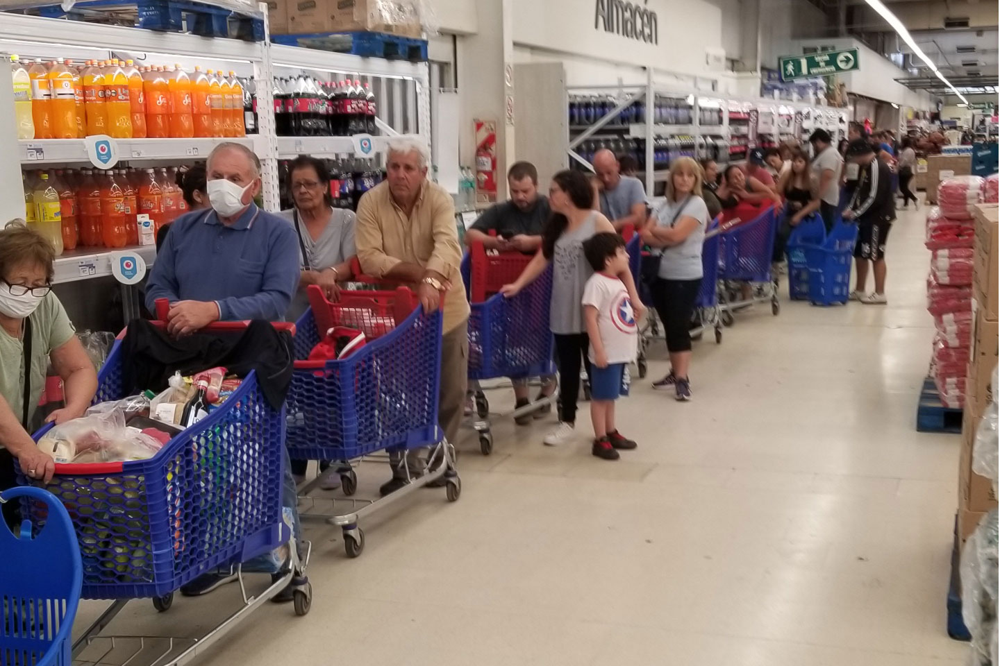

VISION
Somos un Minimarket cuyo objetivo no es sólo vender productos y servicios para satisfacer las necesidades de nuestros clientes, sino hacerles sentir como en casa en un ambiente de confianza y familiaridad mediante un excelente servicio y precios asequibles, pues su satisfacción es la nuestra.
MISION
Para el año 2023, el MiniMarket estará posicionado en el formato de tiendas de retail como una empresa sólida y competitiva en su actividad comercial, además,convertira en el supermercado con mejor calidad y precios mas comodos en toda la region de Lambayeque .Seremos uno de los supermercados más importantes y reconocidos por nuestros clientes, proveedores y competidores. Esto lo lograremos aumentando nuestra capacidad instalada, el número de clientes y las ventas. Todo, potenciado y sustentado en la máxima tecnología y en los principios de comercio justo.
